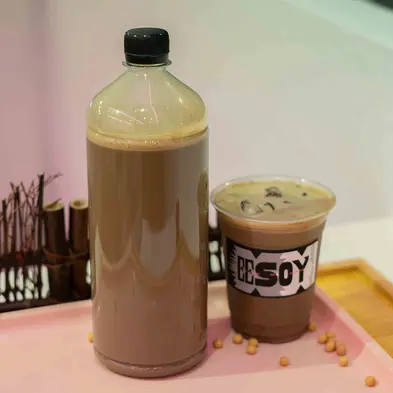

EESOY started with a simple complaint: that soymilk in most dessert shops is treated as filler — thin, over-sweetened, and never the point.
We do the opposite. Every cup starts with whole organic soybeans, soaked overnight and hand-brewed the following morning in small batches, so nothing sits around long enough to lose its bean-forward flavour. What comes out of that process is worth drinking on its own — which is why our Signature Soy series exists at all, five ways of tasting the same base brew.

Nothing on the menu is made ahead and held. Soymilk is brewed each morning before opening; taufufa is set in small trays throughout the day so it's never more than a few hours old when it reaches a table; the soy gelato base is churned to order. If a batch runs low, it's remade — not stretched.
A short list of the choices that shape everything EESOY serves.
Every flavour, from hojicha to black sesame, is built to complement the soymilk base rather than mask it.
Taufufa is scooped fresh per bowl; soy gelato is churned as it's ordered, not pre-portioned.
Our DIY counter exists so a bowl of taufufa can be as plain or as loaded as you want it.